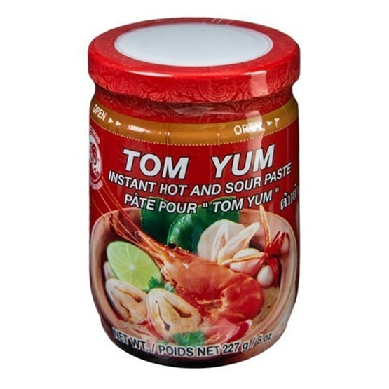

20.04.2020
tom yum paste
New week new paste! This week, we're visiting an old favourite: tom yum paste.
This one is a real staple, and is the basis for a delicious thai sour soup,
recipe here. Cock brand (below) is pretty good, as is nang fah: but remember to add shrimp paste too as they don't include it!
